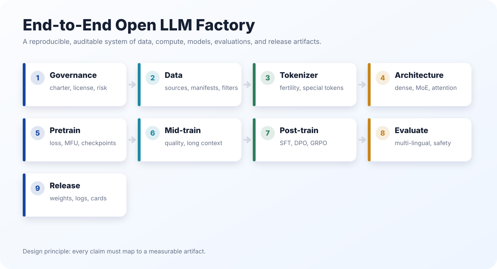

Data And Governance
Source registries, licensing, privacy review, quality filtering, deduplication, contamination control, and multilingual mixtures.
Public technical blueprint
A practical, academic-style guide to building transparent, reproducible, multilingual foundation models at OpenEuroLLM scale.

What it covers
Source registries, licensing, privacy review, quality filtering, deduplication, contamination control, and multilingual mixtures.
Tokenizers, dense baselines, MoE candidates, sparse attention, scaling-law experiments, HPC portability, checkpointing, and observability.
SFT, DPO, RLHF, GRPO/RLVR, reasoning data, agent/tool-use training, and regression testing after every capability stage.
Multilingual benchmarks, long-context tests, safety, model cards, dataset cards, reproducible recipes, and open artifact manifests.
Public-safe edition
The PDF was generated from the included Markdown and bibliography. Private local-KB attribution, non-final status claims, draft compute request details, and internal-state infographics were excluded.